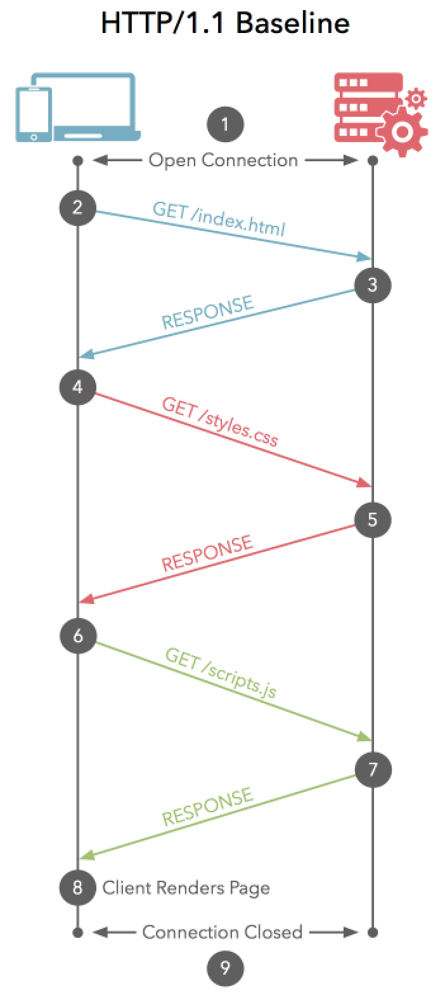
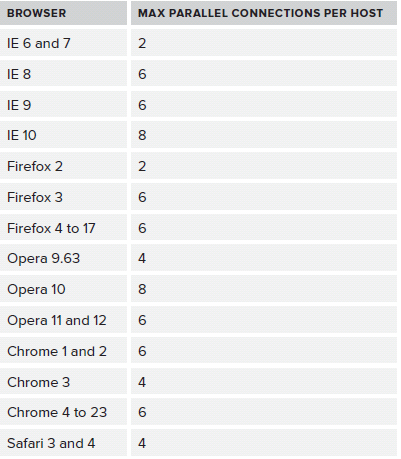
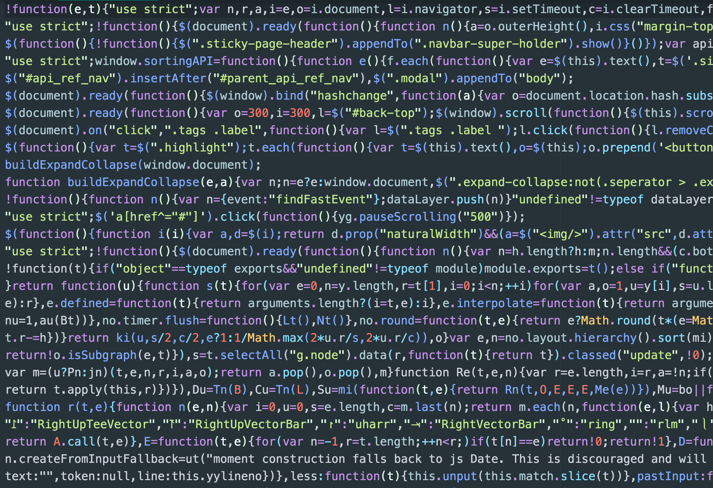
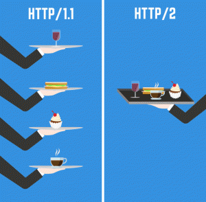
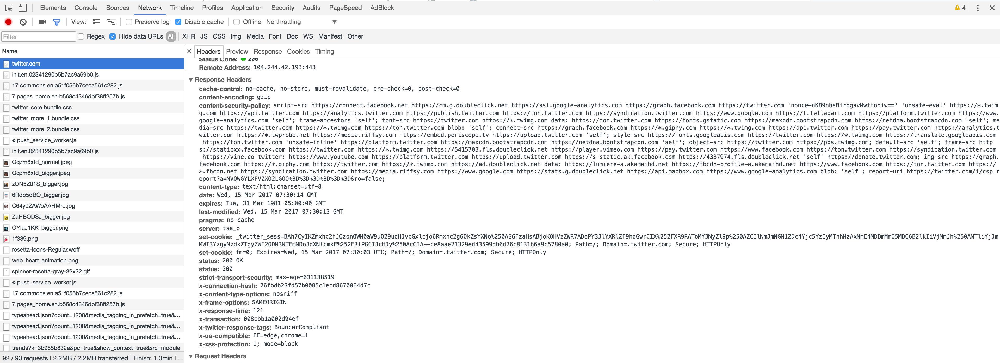

Web Performance and New HTTP/2 Era
Hacks for improving Web performance and how it will change with HTTP/2
Created by Łukasz Górnicki / @derberq
Agenda:
1. Short history of HTTP protocol
2. Hacks for improving performance on client side
3. Changes comming with HTTP/2
Super Short History of HTTP Protocol
HTTP vs Cars
HTTP/0.9 (1991)
Which movie released in 1991 is my favourite
Die Hard
Robin Hood: Prince of Thieves
The Silence of the Lambs
Double Impact
HTTP/1.0 (1996)
Who won Oscar for a Best Picture
Braveheart
Forrest Gump
Titanic
HTTP/1.1 (1999)

Bill Clinton impeachment
NATO bombs Yugoslavia because of Kosovo
SPDY (2012)
Who won Champions League final
Bayern Munich
Chelsea
RKS Zagłębie Dąbrowa Górnicza
Barcelona
HTTP/2 (May 2015)
Browser Performance Hacks
how does communication work and how browsers solve it with multiple connections
Ping Pong
 Client Side Web Performance Hacks
- Minification
- Uglification
- Concatenation
- Vulcanization?
- Compression
- Spriting
HTML/JS/CSS
Images
Domain Sharding
https://www.youtube.com/results?search_query=allegro+legendy+polskie and images split among different domainsMinification - Uglification - Concatenation in Action
Compression
Nothing to show, ImageMagic simply rocks
Spriting
http://spritegen.website-performance.org/Some HTTP/2 Features
Binary and Multiplexing

Binary and Multiplexing
Binary and Multiplexing
https://http2.akamai.com/demo https://http2.golang.org/gophertiles?latency=0Server Push

Header Compression
HTTP/2 Dislikes
Haters Gonna Hate
Haters Gonna Hate
Summary
1. You know how to improve performance for HTTP/1.1
2. You know what changes come with HTTP/2
3. Should I care?
Should I care?
- 01.2016: 6% adoption
- 03.2017: 12% adoption
- 08.2017: 16% adoption
https://w3techs.com/technologies/details/ce-http2/all/all
Should I care?
Implementations
Should I care?
Nginx doesn't support server push yet
Node just recently started supporting the protocol natively
CloudFoundry doesn't support HTTP/2 at all
K8S has some issues if you want to use Ingress